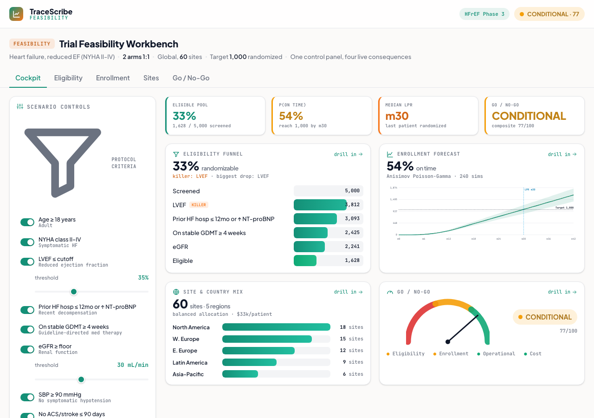

Trial Feasibility Workbench
A live what-if feasibility cockpit for a heart-failure Phase 3: one control panel drives an eligibility funnel, an enrollment forecast, a site mix, and a Go/No-Go scorecard, all at once. Tighten a criterion or add sites and watch every panel move together.
What it does
Answers the question every sponsor asks before committing to a trial: can this be done, where, how fast, and at what cost. It assesses one HFrEF Phase 3 protocol end to end, and because it is a connected model rather than four separate tools, the numbers flow tab to tab and reconcile. The hero is the cockpit: change one input and the eligibility funnel, the enrollment curve, the site mix, and the Go/No-Go gauge all recompute together.
How it works
- Eligibility funnel: real HFrEF inclusion/exclusion criteria (NYHA class, LVEF cutoff, eGFR floor, prior HF hospitalization, on guideline-directed medical therapy, key exclusions) applied to a synthetic patient population one at a time. The eligible pool collapses criterion by criterion, and any criterion whose removal recovers more than 30% of the pool (a full set-difference, not the sequential drop) is flagged a killer.
- Enrollment forecast: a real Anisimov Poisson-Gamma Monte Carlo. Each site activates on a ramp plus a regional startup lag, then screens patients as a Poisson process with a site rate drawn from a Gamma distribution, thinned by yield times consent into randomizations. The result is the cumulative enrollment curve with a 5 to 95% band, the probability of reaching target by the planned last-patient-in, and the time-to-target distribution.
- Site and country mix: candidate regions with real-world tradeoffs (startup lag, recruitment rate, cost per patient). Reallocating sites by a balanced, speed, or cost strategy changes the activation schedule and the blended rate, which ripples to the forecast.
- Go/No-Go scorecard: eligibility, enrollment, operational, and cost dimensions, each scored and gated so the overall verdict is the worst dimension, not the average. A healthy composite still reads No-Go if any single dimension fails.
- Computed, not asserted: yield feeds the forecast as screen-fail, the scorecard reads the forecast's own numbers, and the Monte Carlo mean is cross-checked against the closed-form mean on every recompute. Per-site and per-sim PRNG sub-streams keep the live ripple smooth and reproducible.
A from-scratch demo built from clinical-feasibility research (eligibility funnels, the Anisimov recruitment model, weighted site selection). Synthetic seeded population and data; every number is computed in the browser, file://-safe with no network calls. Takes ?tab=, ?still=1, and deep-linkable scenario params (?n=, ?sites=, ?rate=, ?lvef=, ?egfr=, ?strat=).

Static preview - click to open the live, interactive demo